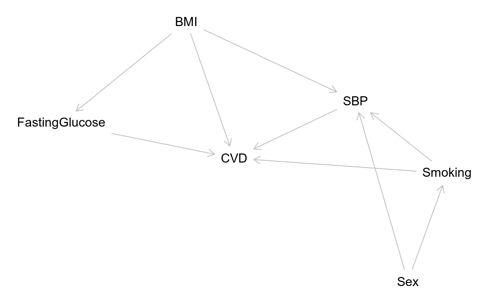

Statistical analyses for cohort studies
There are a wide range of statistical techniques you could apply to cohort datasets, and they depend heavily on the study design, research questions, and the type of data collected. In this chapter we will focus some approaches to choosing the statistical method and how to think about analyzing cohorts. We’ll be focusing on using mixed effect models and how to extract the revelant results from the statistical models.
In this chapter, we’ll be covering statistical analyses. We’ll be focusing mainly on general concepts but with a focus on a common and powerful statistical technique.
Common analyses for cohorts
- For prospective with multiple measures:
- Mixed effects modeling
- Generalized estimating equations
- For other study types/single measure:
- Cox proportional hazard models
- Linear regression
- Logistic regression
There are many ways to analyze cohorts, depending on the data, the research questions, and the study design. For prospective cohorts with multiple measures over time, you would generally use mixed effects or generalized estimated equations, while other study designs tend to use simpler techniques such as linear or logistic regression or cox models. Cohorts usually study a disease, which is generally binary like has or doesn’t have, and requires techniques that use a binomial distribution.
For the rest of the chapter, we’ll focus on mixed effects modeling.
Mixed effects models
- Mixed effects:
- Has “fixed” (population-level) and “random” (individual-level) terms
- Used with multiple measures on same “statistical unit” (e.g. person over time)
# Example syntax:
library(lme4)
glmer(outcome ~ predictor1 + predictor2 +
(1 | random_term), # e.g. subject_id
data = dataset, family = binomial)Mixed effects models are powerful methods that contain a fixed term that indicates the overall effect and a random term that indicates the individual effect. You would use this method when data has been collected on each participant multiple times, as is common in prospective cohorts.
We’ll use the glmer function from lme4. If you are familiar with the glm function, or with generalized linear models, glmer is very similar except that you add a random term.
Formula meaning in mixed models
outcome: \(y\) variable. In cohorts, usually diseasepredictor: One or more \(x\) variable- Fixed terms
- Variables thought to influence outcome
- Using more variables:
predictor1 + predictor2 + ...
There are three parts to a mixed model formula: the outcome or y, the predictors or x, and the random term. The outcome in cohorts is usually the disease.
The predictor is the fixed term and can be one or more predictor variables, separated by a plus sign. The main predictor of interest, called the exposure, is the one we hypothesize has a role in the the disease. Other predictors include potential confounders, which we will cover later.
Formula meaning in mixed models
(1 | random_term): Random effects variable- Random = dependency between observations (e.g. siblings in family, person over time)
- Takes form
(left | right): left = individual slopes, right = individual intercepts 1= same slope for allrandom_term= each person has own intercept
Lastly, there is the random effects variable. The name random means there is a dependency between observations, such as with siblings in a family or a person measured over time.
The form has two parts, a left and right side. The left side calculates slopes for each random unit while the right side calculates intercepts for each unit. The one here says to have the same slopes and that each random unit on the right will have a different intercept. For example, in a prospective cohort, individuals measured over time will all start at their own weight at the start and change over time.
Recall transforming variables for modeling
# Example code for transforming: Center, division, log
changed_dataset <- dataset %>%
mutate(predictor_center = scale(predictor, scale = FALSE),
predictor_divided_num = predictor / num,
predictor_log = log(predictor))- For mixed models, large differences in variable variances is common issue
- E.g. Weight of mother in kg and weight of newborn in grams
- Often involves trial and error for transformations
In chapter 2 we covered transforming variables. Here we will put that knowledge to use. Some modeling techniques are fussy with the data you give it. Usually the model function informs you of any issue.
For instance, with mixed effects models, large differences in the variances of variables in the formula can cause computational problems. A good example would be the weight differences between a mother in kg and a newborn in grams.
You’ll often have to do some trial and error of scaling, logging, or other transformations before the model computes a correct error-free output.
Running mixed effects models using glmer
# Example code usage:
library(lme4)
glmer(outcome ~ center_predictor + predictor_divided_100 +
log_predictor + (1 | random_id), # e.g. subject_id
data = changed_dataset, family = binomial)We’ve covered what to include in the formula and how to transform some variables. Now for how we put it together in the glmer function. glmer takes several arguments, but the three most important ones are the formula, the data, and the family function. The family argument is used to indicate how to handle the outcome variable. Since the outcome is binary, you either have the disease or don’t, we need to use the binomial distribution family to obtain the correct results.
Lesson summary
- Mixed effects models commonly used
- Fixed for population, random for individual
glmer()takes three arguments: formula, data, family- Formula:
y ~ x + (1 | random)- Any variable, including transformed can be added
To summarize, mixed effects models are common, allow you to consider individual’s differences with the random term, that the glmer takes three arguments, and that the formula can include any variable in the dataset.
Let’s practice with mixed effects models!
Let’s do some practice!
What questions can be asked from Framingham?
Because the Framingham study is a prospective cohort, with certain limits to the data and with three data collection visits, there are restrictions to the types of questions we can ask and reliably answer.
Get familiar with mixed effects models
Let’s get you familiar with using and running glmer() models. There is some tweaking involved when running glmer() models, such as transforming variables before hand. Often this requires some trial and error to get right. For now, practice running some models.
The lme4 package has been loaded for you. Since glmer() is computationally expensive, the Framingham dataset has been reduced in size and is loaded as sample_tidied_framingham.
Recall that the pattern for using glmer() is:
Exercise step
Instructions:
- Run a model looking at how
total_cholesterol_scaledrelates to the outcomegot_cvd(havesubject_idas the random term).
# Model scaled cholesterol on CVD
model <- glmer(
___ ~ ___ + ___,
data = ___,
# Use distribution for binary outcome
family = ___
)
# View the model output
summary(model)"The formula should be `got_cvd ~ total_cholesterol_scaled + (1 | subject_id)`."# Model scaled cholesterol on CVD
model <- glmer(
got_cvd ~ total_cholesterol_scaled + (1 | subject_id),
data = sample_tidied_framingham,
# Use distribution for binary outcome
family = binomial
)
# View the model output
summary(model)"Amazing!"Exercise step
Instructions:
- Try another predictor. Run a model with
fasting_blood_glucose_scaledas a predictor instead of cholesterol.
# Model scaled fasting blood glucose on CVD
model <- glmer(
___ ~ ___ + ___,
data = ___,
# Use distribution for binary outcome
family = ___
)
# View the model output
summary(model)"Using the same formula as the previous step, replace `total_cholesterol_scaled` with `fasting_blood_glucose_scaled`."# Model scaled fasting blood glucose on CVD
model <- glmer(
got_cvd ~ fasting_blood_glucose_scaled + (1 | subject_id),
data = sample_tidied_framingham,
# Use distribution for binary outcome
family = binomial
)
# View the model output
summary(model)"Great job! You've become a bit more familiar with coding and running mixed effects models in R. You ran two models to get practice on setting predictors and the formula. Now we can get to more complicated modeling aspects."Why transforming may be required
You need to consider many things with glmer() models, e.g. large variable variances. Often glmer() will warn you of a problem, which you must fix using your knowledge of transformations. Getting it right often involves trial and error.
These exercises will (likely) generate warnings or errors. Compare the different transformations and notice why problems occur. Recall that we are using a smaller dataset, sample_tidied_framingham. The general template for glmer() is:
Exercise step
Instructions:
- As before, run a model but use
total_cholesterolinstead (got_cvdas the outcome); you will get a warning.
# Model total cholesterol on CVD
model <- glmer(
___ ~ ___ + (1 | ___),
data = sample_tidied_framingham,
family = binomial
)
# View the model output
summary(model)"Don't forget the random term: `(1 | subject_id)`."# Model total cholesterol on CVD
model <- glmer(
got_cvd ~ total_cholesterol + (1 | subject_id),
data = sample_tidied_framingham,
family = binomial
)
# View the model output
summary(model)"Amazing job!"Exercise step
Instructions:
- Now use
total_cholesterol_centeredin the model; you will get a warning.
# Model with centered cholesterol on CVD
model <- glmer(
got_cvd ~ ___ + (1 | subject_id),
data = sample_tidied_framingham,
family = binomial
)
# View the model output
summary(model)"Replace the original cholesterol variable with `total_cholesterol_centered` in the formula."# Model with centered cholesterol on CVD
model <- glmer(
got_cvd ~ total_cholesterol_centered + (1 | subject_id),
data = sample_tidied_framingham,
family = binomial
)
# View the model output
summary(model)"Great!"Exercise step
Instructions:
- Use the
total_cholesterol_scaledvariable instead; the warning should now be fixed.
# Model with scaled cholesterol
model <- glmer(
got_cvd ~ ___ + (1 | subject_id),
data = sample_tidied_framingham,
family = binomial
)
# View the model output
summary(model)"Include `total_cholesterol_scaled` in the formula."# Model with scaled cholesterol
model <- glmer(
got_cvd ~ total_cholesterol_scaled + (1 | subject_id),
data = sample_tidied_framingham,
family = binomial
)
# View the model output
summary(model)"Amazing! You've solved the warnings about non-convergence and rescaling issue! Often it requires some trial and error to find which transformations are optimal for the model technique."Include time in the mixed effect model
Before the development of mixed effects modeling, analyzing longitudinal data was fairly difficult because repeated measures violated the assumption of independent observations. This time component is a key strength of longitudinal studies like with prospective cohorts. But to use that strength you need to, well, include time in the model!
Include an additional predictor (followup_visit_number) in the glmer() formula. Recall that got_cvd is the outcome and subject_id is the random term.
Instructions:
- Run a model with two predictors:
total_cholesterol_scaledandfollowup_visit_number.
capture.output({
data(sample_tidied_framingham, package = "acdcourse")
library(lme4)
}, file = tempfile())# Include followup visit number with cholesterol
model <- glmer(
# Add scaled cholesterol and visit
got_cvd ~ ___ + ___ + (1 | subject_id),
data = sample_tidied_framingham,
family = binomial
)
# View the model summary
summary(model)"The formula should be `total_cholesterol_scaled + followup_visit_number`."# Include followup visit number with cholesterol
model <- glmer(
# Add scaled cholesterol and visit
got_cvd ~ total_cholesterol_scaled + followup_visit_number + (1 | subject_id),
data = sample_tidied_framingham,
family = binomial
)
# View the model summary
summary(model)"Awesome! Adding a time component to any analysis that has repeated measurements is quite important. It reduces model bias and allows you to interpret the results in the context of time."Adjustment, confounding, and model building
A difficult part of doing cohort analyses is controlling for potential confounders.
Classical definition of a confounder
Example of classical confounder.
What is a confounder? It is a variable that could influence both the exposure and outcome. While you may have learned about confounding in other courses, understanding it is essential to making valid inferences.
Creating models: Controlling for confounding
- Completely controlling for confounding is very difficult
- STROBE statement on best practices: STrengthening the Reporting of OBservational studies in Epidemiology. (www.strobe-statement.org)
- Three common approaches:
- Literature, biological rationale, background knowledge
- Causal pathways: Directed acyclic graphs (DAG)
- Model selection: Information criterion methods
You control for confounding by including them in your models. Adequately adjusting for confounding requires much consideration. Do the best you can, but know that you’ll never adjust for everything.
Confounder adjustment is part of any thorough research and is part of the STROBE statement on best practices. STROBE, or Strengthening the Reporting of Observational Studies in Epidemiology, is a standard in cohort research and should be adhered to.
We should use several approaches to identify confounders, as each have strengths and weaknesses. Use biological and domain knowledge and formal methods like directed acyclic graphs, called DAGs, and information criterion techniques.
Identify confounders with Directed Acyclic Graphs (DAG)
DAG, or a directed acyclic graph.
- Directed = A link with an arrow/direction
- Acyclic = No looping (cycling) backward
- Graph = Representation of objects and links
DAGs make hypothetical causal links explicit and provide a powerful approach to finding confounders.
Let’s break the name down. Directed indicates directionality: cause and effect. Acyclic means that a pathway doesn’t loop backward: the effect can’t also cause the cause. Lastly, graph is a visual representation of links between objects.
Identifying adjustment variables with dagitty
An example: Height with colon cancer

dagitty generated graph.
Here’s an example of using DAGs. Let’s say we want to determine if height associates with colon cancer.
We can use the dagitty package to help find confounders. We give it a character string of a DAG specification. This string begins with the name dag, then curly brackets, followed by hypothetical variable names and links. Write links with the minus and greater than sign.
We plot it using the graph-layout function.
Identifying adjustment variables with dagitty
An example: Height with colon cancer
But…
- Men are taller
- Men more likely to get cancer
dagitty generated graph of colon cancer, sex, and height.
But, we know there are confounders. We know men tend to be taller and men are more likely to get cancer.
We then add these links into dagitty. Since sex is linked with both height and cancer, we include both by wrapping them in curly brackets.
Plotting it shows the links we’ve added.
Identifying adjustment variables with dagitty
An example: Height with colon cancer
But…
- Men are taller
- Men more likely to get cancer
dagitty is used mainly to help with causal reasoning and to decide what to include in our models. The adjustment sets function tells us which variables at a minimum we should adjust for. In the function we need to set the exposure and outcome arguments.
This is a simple example, but it says we should at least adjust for sex.
Assessing model fit: Information criterion methods
- Estimates relative model “quality” over others
- Trade-off between goodness of fit and number of predictors
- Common method: Akaike information criterion (AIC)
- For maximum likelihood models
- Smaller number, the better
Another method is information criterion, which identifies adjustment variables by comparing multiple models’ fitness. Akaike criterion or AIC ranking is commonly used. A smaller AIC is better.
Model selection using the MuMIn package
full_model <- glmer(
got_cvd ~ body_mass_index_scaled + total_cholesterol_scaled +
participant_age + currently_smokes + education_combined +
sex + (1 | subject_id),
data = tidied_framingham, family = binomial, na.action = "na.fail")library(MuMIn)
# Models with every combination of predictor
model_selection <- dredge(full_model, rank = "AIC",
subset = "total_cholesterol_scaled")- A caution: With many variables, big datasets, and/or the type of model = long computation times
The MuMIn package has model selection functions like dredge. Dredge needs a model with all variables we think may bias the results. The argument na dot action set to na dot fail must be set.
We give the model object to dredge to run models with all possible variable combinations. We’ll use AIC in the rank argument and specify with the subset argument that we want models with at least cholesterol included.
A quick warning, computation times can become very long if you’re not careful.
Model selection using the MuMIn package
(Intercept) body_mass_index_scaled currently_smokes
57 -1.218899 0.7494514 <NA>
59 -1.522049 0.7652833 +
49 -1.258198 0.7356253 <NA>
education_combined participant_age sex total_cholesterol_scaled
57 <NA> 0.5155339 + 0.2742008
59 <NA> 0.5858787 + 0.2709116
49 <NA> NA + 0.2748649
df logLik AIC delta weight
57 6 -203.0653 418.1307 0.0000000 0.36560377
59 7 -202.2876 418.5751 0.4444555 0.29275100
49 5 -205.4571 420.9143 2.7836167 0.09089835To show the top three models, we first convert the dredge object to a dataframe and use head with three.
Dredge outputs several columns, with each row as a model. Rows with missing values in the columns for the variable names indicate they were not included in the model. The delta and weight columns indicate which models are the relatively better. The delta is the difference in AIC to the model above. Weight is the likelihood that we should choose that model.
The top model adjusts for body mass, age, and sex.
Let’s find some confounders!
Alright, let’s identify confounders!
Model selection using DAGs
Building a DAG that approximates the biology is difficult. It requires domain knowledge, so consult experts to confirm the DAG. Remember, you will build an incomplete DAG. This is but one step to finding confounders.
Let’s determine which variables to adjust for when systolic blood pressure (SBP) is the exposure and CVD is the outcome. Assume that:
SexinfluencesSBPandSmokingSmokinginfluencesSBPandCVDBMIinfluencesCVD,SBP, andFastingGlucoseFastingGlucoseinfluencesCVD
Create a dagitty() object to identify what to adjust for.
Recall that for dagitty: x -> y means “x influences y” and that x -> {y z} means “x influences y and z”; dagitty is already loaded.

Exercise step
Instructions:
- Using both the links between variables described in the context above and the plot as a guide, create a DAG of the hypothetical pathways.
- Visually inspect the plot of the
variable_pathwaygraph.
# Include the links between variables
variable_pathways <- dagitty("dag {
SBP -> CVD
___ -> {___ ___}
___ -> {___ ___ ___}
___ -> ___
}")
# Plot potential confounding pathways
plot(graphLayout(variable_pathways))"The form for a pathway is `start_variable -> {one or more end variables}`."# Include the links between variables
variable_pathways <- dagitty("dag {
SBP -> CVD
Sex -> {SBP Smoking}
Smoking -> {SBP CVD}
BMI -> {SBP CVD FastingGlucose}
FastingGlucose -> CVD
}")
# Plot potential confounding pathways
plot(graphLayout(variable_pathways))"Great!"Exercise step
Instructions:
- Identify the (minimal) model
adjustmentSets()of variables from thevariable_pathwaysgraph, selecting"SBP"as exposure and"CVD"as outcome.
# Include the links between variables
variable_pathways <- dagitty("dag {
SBP -> CVD
Sex -> {SBP Smoking}
Smoking -> {SBP CVD}
BMI -> {SBP CVD FastingGlucose}
FastingGlucose -> CVD}")
# Plot potential confounding pathways
plot(graphLayout(variable_pathways))
# Identify some confounders to adjust for
adjustmentSets(___, exposure = ___, outcome = ___)"The `adjustmentSets()` requires the DAG object and the outcome (CVD) and the predictor (SBP)."# Include the links between variables
variable_pathways <- dagitty("dag {
SBP -> CVD
Sex -> {SBP Smoking}
Smoking -> {SBP CVD}
BMI -> {SBP CVD FastingGlucose}
FastingGlucose -> CVD}")
# Plot potential confounding pathways
plot(graphLayout(variable_pathways))
# Identify some confounders to adjust for
adjustmentSets(variable_pathways, exposure = "SBP", outcome = "CVD")"Excellent job!"Exercise step
Model selection using Information Criterion
It’s best to use multiple methods to decide on which variables to include in a model. The information criterion methods are powerful tools for choosing variables to adjust for. Using the functions from the MuMIn package, determine which model has the best fit for the models being compared by using AIC to rank them. A smaller AIC is better.
As many models will be computed and compared, for these lesson purposes only, we kept computing time short by: greatly reducing the sample size and number of variables in the data, called model_sel_df; and, setting nAQG = 0 (reduces estimation precision, but increases speed). MuMIn also requires na.action = "na.fail" to be set in glmer().
Exercise step
Instructions:
- Add
systolic_blood_pressure_scaled,sex,body_mass_index_scaled,currently_smokes, andfollowup_visit_numberto the formula.
# Set the model formula
model <- glmer(
got_cvd ~ ___ + ___ +
___ + ___ + ___ + (1 | subject_id),
data = model_sel_df,
family = binomial,
na.action = "na.fail",
# Speeds up computation, reduces precision
nAGQ = 0
)"Model formulas are in the form: `got_cvd ~ predictor1 + predictor2 + (1 | subject_id)`."# Set the model formula
model <- glmer(
got_cvd ~ systolic_blood_pressure_scaled + body_mass_index_scaled +
currently_smokes + sex + followup_visit_number + (1 | subject_id),
data = model_sel_df,
family = binomial,
na.action = "na.fail",
# Speeds up computation, reduces precision
nAGQ = 0
)"Great job!"Exercise step
Instructions:
dredge()through the combinations of variables, subset bysystolic_blood_pressure_scaledin the model and rank by"AIC".- Print the top 3
selectionmodels.
model <- glmer(
got_cvd ~ systolic_blood_pressure_scaled + body_mass_index_scaled +
currently_smokes + sex + followup_visit_number + (1 | subject_id),
data = model_sel_df,
family = binomial,
na.action = "na.fail",
nAGQ = 0
)
# Set the ranking method and subset
selection <- dredge(___, rank = ___, subset = ___)
# Print the top 3
head(as.data.frame(selection), 3)"Give `model` as the first argument to `dredge()`."
"Both `rank` and `subset` should be a character string."model <- glmer(
got_cvd ~ systolic_blood_pressure_scaled + body_mass_index_scaled +
currently_smokes + sex + followup_visit_number + (1 | subject_id),
data = model_sel_df,
family = binomial,
na.action = "na.fail",
nAGQ = 0
)
# Set the ranking method and subset
selection <- dredge(model, rank = "AIC", subset = "systolic_blood_pressure_scaled")
# Print the top 3
head(as.data.frame(selection), 3)"Great job!"Exercise step
Hint: Check which variables have missingness in the rows selection.
Testing for interactions and sensitivity analyses
An important part of any cohort analysis is testing for interactions of variables and running sensitivity analyses.
Interaction: Combining variables in a model
- Interaction testing: Check if a variable modifies another variable’s association on the outcome
- E.g. A drug reduces risk of a disease in men, but not women
- E.g. Greater risk for disease from obesity in some ethnicities
- Always consider sex and ethnic ancestry
Interaction testing is when you combine variables in a model to see whether their individual values together modify the association with an outcome. For example, some drugs reduce risk for disease in men, but may be harmful or have no effect in women. Or that risk factors such as obesity have a larger effect in certain ethnicities. For sex and ethnicity, you should always check for interactions, as they have powerful impacts on health.
Several approaches to checking interactions
- Visual inspection
- Very effective
- Stratified/subgroup analysis
- Split dataset based on group
- Do separate analysis on splits
- Formal test for interaction
- Model possible differences
There are several ways to check for interactions. The first, and often most effective, is to visualize the data. More formal methods include doing stratified analyses, by splitting up the dataset. You can also directly model interactions using interaction terms in your analyses.
Modeling differences using interaction terms
Interaction terms using R formula:
outcome ~ predictor + sex + predictor:sexSimplified version in formula:
outcome ~ predictor * sexThere are several ways to model interactions. One way is similar to mathematically writing it out, with the predictor colon sex specifying the interaction.
However, you can also use a shorthand with the asterisk between the two terms. These two formula are equivalent.
Running a model with an interaction
model_with_interaction <- glmer(
got_cvd ~ body_mass_index_scaled * sex + (1 | subject_id),
data = tidied_framingham, family = binomial)
summary(model_with_interaction)Generalized linear mixed model fit by maximum likelihood (Laplace Approximation)
Fixed effects:
Estimate Std. Error z value Pr(>|z|)
(Intercept) -12.3403 0.3203 -38.530 <2e-16 ***
body_mass_index_scaled 0.1272 0.2681 0.475 0.6351
sexWoman -0.9423 0.3696 -2.549 0.0108 *
body_mass_index_scaled:sexWoman 0.1672 0.3412 0.490 0.6241 <-- This- Interaction interpretation is difficult and complex
Here is a mixed model interaction using the Framingham dataset. We are testing the interaction between scaled body mass index and sex. Notice the asterisks to denote the interaction.
The model summary gives a lot of information, most of which I’ve cut to show the main fixed effects. With interactions we can’t interpret using just one estimate as we would with no interactions. We must use the estimates from each of the interaction terms, which are the three estimates from this model.
Interpreting interaction results can be quite challenging. If you encounter interactions in your own modeling or want to learn more, check out other courses/resources that are dedicated to understanding interactions.
Checking if an interactive association exists
library(MuMIn)
model_no_interaction <- glmer(
got_cvd ~ body_mass_index_scaled + sex + (1 | subject_id),
data = tidied_framingham, family = binomial)
model_with_interaction <- glmer(
got_cvd ~ body_mass_index_scaled * sex + (1 | subject_id),
data = tidied_framingham, family = binomial)
# Compare models
model.sel(model_no_interaction, model_with_interaction, rank = "AIC")Model selection table
... logLik AIC delta weight
model_no_interaction ... -1822.493 3652.985 0.000000 0.7069518 <-- Here
model_with_interaction ... -1822.373 3654.746 1.761251 0.2930482
Models ranked by AIC(x) To determine if an interaction does exist, you need to compare models with and without an interaction using the model dot sel function. The function accepts many models as arguments. Set the ranking method using the rank argument. We’ll use AIC, which you’ll recall is a measure that balances a model’s fitness to the data and how many predictors are included. A smaller compared to larger AIC value means the model is relatively better.
Running the function outputs several columns. The important ones are AIC, delta, and weight. The interaction model’s delta is two more AIC, indicating it is slightly worse, while the no interaction model’s weight value tells us that it is seventy percent more likely better. This tells us that including an interaction gives no additional information, so we can remove it.
Checking robustness of results with sensitivity analyses
Sensitivity analysis: “assess the robustness of association by checking change in results by changing assumptions”
- Very common in epidemiology
- Examples:
- Are people who miss collection visits different from others?
- Does the statistical technique change results?
Sensitivity analysis is a way to determine how robust your results are under different assumptions.
Examples include whether people who miss the data collection visit are different or if the results change with a different statistical technique.
Example: Previous diabetes increases risk of CVD
no_diabetes_framingham <- tidied_framingham %>%
filter(diabetes == 0)
glmer(got_cvd ~ body_mass_index_scaled + (1 | subject_id),
data = tidied_framingham, family = binomial) %>%
fixef()
#> (Intercept) body_mass_index_scaled
#> -12.86217 0.23932 glmer(got_cvd ~ body_mass_index_scaled + (1 | subject_id),
data = no_diabetes_framingham, family = binomial) %>%
fixef()
#> (Intercept) body_mass_index_scaled
#> -12.8966567 0.2529004 Here’s an example. Individuals with diabetes have a much higher risk of developing CVD because of toxicity from high blood glucose. Depending on the predictors we include, we may need to remove diabetes cases as they may be biasing the estimates. We should compare how including participants with diabetes changes the model by two models, with and without diabetes cases. Then output the estimates for both using the fixef function.
The estimate for BMI in the model without diabetes cases is slightly higher than the estimate that includes diabetes cases. This suggests that diabetes cases may be reducing the estimate. However, the differences are very small, so if there is bias it isn’t large.
Time to practice!
Alright, let’s do some exercises!
Determining sex interaction with the predictor
In the past (and still very common today), most research was done with mostly or entirely males. Clinical trials, experimental animal models, and observational studies tended to explicitly study males, as female hormonal cycles can act as a confounding factor. This often had harmful consequences, since there are massive gender differences in responses to drug treatment and other disease interventions. Most journals and funding agencies now require that differences in sex, and ethnicity, are investigated.
Since the Framingham study has almost entirely individuals of European-ancestry, we can only test sex interactions. Compare models without and with interactions for sex.
Exercise step
Instructions:
- Run
glmer()models withtotal_cholesterol_scaled,sex, andfollowup_visit_number, without an interaction term.
# Model without interaction
model_no_interaction <- glmer(
got_cvd ~ ___ + ___ + ___ + (1 | subject_id),
data = sample_tidied_framingham,
family = binomial)
summary(model_no_interaction)"The predictors should be added together like `predictor1 + predictor2`."# Model without interaction
model_no_interaction <- glmer(
got_cvd ~ total_cholesterol_scaled + sex + followup_visit_number + (1 | subject_id),
data = sample_tidied_framingham,
family = binomial)
summary(model_no_interaction)"Great! Next step."Exercise step
Instructions:
- Create the same formula, but this time with an interaction, denoted by
*, betweentotal_cholesterol_scaledandsex.
# Model without interaction
model_no_interaction <- glmer(
got_cvd ~ total_cholesterol_scaled + sex + followup_visit_number + (1 | subject_id),
data = sample_tidied_framingham,
family = binomial)
# Model with sex interaction
model_sex_interaction <- glmer(
got_cvd ~ total_cholesterol_scaled ___ sex + followup_visit_number + (1 | subject_id),
data = sample_tidied_framingham,
family = binomial)
summary(model_sex_interaction)"The interaction should be `total_cholesterol_scaled * sex`."# Model without interaction
model_no_interaction <- glmer(
got_cvd ~ total_cholesterol_scaled + sex + followup_visit_number + (1 | subject_id),
data = sample_tidied_framingham,
family = binomial)
# Model with sex interaction
model_sex_interaction <- glmer(
got_cvd ~ total_cholesterol_scaled * sex + followup_visit_number + (1 | subject_id),
data = sample_tidied_framingham,
family = binomial)
summary(model_sex_interaction)"Great! Next step."Exercise step
Instructions:
- Include both model objects in
model.sel(), with an"AIC"rank.
# Model without interaction
model_no_interaction <- glmer(
got_cvd ~ total_cholesterol_scaled + sex + followup_visit_number + (1 | subject_id),
data = sample_tidied_framingham,
family = binomial)
# Model with sex interaction
model_sex_interaction <- glmer(
got_cvd ~ total_cholesterol_scaled * sex + followup_visit_number + (1 | subject_id),
data = sample_tidied_framingham,
family = binomial)
# Test if interaction adds to model
model.sel(___, ___, rank = ___)"Include both models, `model_no_interaction` and `model_sex_interaction`, in the `model.sel()` function, separated by a comma."# Model without interaction
model_no_interaction <- glmer(
got_cvd ~ total_cholesterol_scaled + sex + followup_visit_number + (1 | subject_id),
data = sample_tidied_framingham,
family = binomial)
# Model with sex interaction
model_sex_interaction <- glmer(
got_cvd ~ total_cholesterol_scaled * sex + followup_visit_number + (1 | subject_id),
data = sample_tidied_framingham,
family = binomial)
# Test if interaction adds to model
model.sel(model_no_interaction, model_sex_interaction, rank = "AIC")"Great!"Exercise step
Hint: Check which model has a higher weight or lower AIC.
Running sensitivity analyses with body mass index
Often times we make assumptions about our data and the participants that make up that data. For instance, with body mass index (BMI), we assume that the value represents a person regardless of how sick or healthy they are. However, usually if someone’s BMI is really low (below around 18.5, which is considered underweight) or really high (above 40 which is considered morbidly obese), this could indicate a serious health problem that they may have. For example, people who are very ill usually lose a lot of weight. So if we include them in the model, we might get a biased estimate for the association of BMI on CVD. Run a sensitivity analysis removing these observations and compare the results.
Use the sample_tidied_framingham dataset.
Exercise step
Instructions:
- Keep those people with
body_mass_indexequal to or above 18.5 and equal to or below 40.
# Remove low and high body masses
bmi_check_data <- sample_tidied_framingham %>%
filter(___ >= ___, ___ <= ___)"Include two conditions (`>=` and `<=`) to restrict the range of `body_mass_index`, separated by a comma."# Remove low and high body masses
bmi_check_data <- sample_tidied_framingham %>%
filter(body_mass_index >= 18.5, body_mass_index <= 40)"Excellent! Next step."Exercise step
Instructions:
- Include
body_mass_index_scaledandfollowup_visit_numberin the formula and run the model with thesample_tidied_framingham.
bmi_check_data <- sample_tidied_framingham %>%
filter(body_mass_index >= 18.5, body_mass_index <= 40)
# Run and check model with original dataset
original_model <- glmer(
got_cvd ~ ___ + ___ + (1 | subject_id),
data = ___, family = binomial)
# Fix effect estimates
fixef(original_model)"Use `sample_tidied_framingham` in the data argument."bmi_check_data <- sample_tidied_framingham %>%
filter(body_mass_index >= 18.5, body_mass_index <= 40)
# Run and check model with original dataset
original_model <- glmer(
got_cvd ~ body_mass_index_scaled + followup_visit_number + (1 | subject_id),
data = sample_tidied_framingham, family = binomial)
# Fix effect estimates
fixef(original_model)"Excellent! Next step."Exercise step
Instructions:
- Now run the model with the data that excludes the body mass index values.
bmi_check_data <- sample_tidied_framingham %>%
filter(body_mass_index >= 18.5, body_mass_index <= 40)
original_model <- glmer(
got_cvd ~ body_mass_index_scaled + followup_visit_number + (1 | subject_id),
data = sample_tidied_framingham, family = binomial)
# Run and check model with the body mass checking
bmi_check_model <- glmer(
got_cvd ~ body_mass_index_scaled + followup_visit_number + (1 | subject_id),
data = ___, family = binomial)
# Fix effect estimates
fixef(original_model)
fixef(bmi_check_model)"Run the same model but use the newly created `bmi_check_data`."bmi_check_data <- sample_tidied_framingham %>%
filter(body_mass_index >= 18.5, body_mass_index <= 40)
original_model <- glmer(
got_cvd ~ body_mass_index_scaled + followup_visit_number + (1 | subject_id),
data = sample_tidied_framingham, family = binomial)
# Run and check model with the body mass checking
bmi_check_model <- glmer(
got_cvd ~ body_mass_index_scaled + followup_visit_number + (1 | subject_id),
data = bmi_check_data, family = binomial)
# Fix effect estimates
fixef(original_model)
fixef(bmi_check_model)"Amazing!"Exercise step
Tidying and interpreting model results
We’ve ran several models, checked them, and identified confounders. Now let’s tidy these models up, extract relevant results, and interpret them.
Tidying up with broom.mixed
- Use
tidyfrom broom package- For mixed models use the broom.mixed package
library(broom.mixed)
model <- glmer(got_cvd ~ body_mass_index_scaled + sex + (1 | subject_id),
data = tidied_framingham, family = binomial)
# General tidying
tidy(model_object)Most statistical methods in R are developed by independent researchers, so there usually isn’t an underlying consistency in presenting the method’s results. They can be messy to deal with and it can be a frustrating experience when learning something new. Thankfully there is the tidy function from the broom package to help out! Tidy, which takes a model object, allows you to clean up many analyses, calculate confidence intervals for uncertainty, and, for logistic regression, calculates the odds ratio. Odds ratios are covered more in the Logistic Regression course, but briefly, it is the odds of an outcome occurring given a predictor’s presence compared to the odds given the predictor’s absence.
Tidy output and confidence intervals
# A tibble: 4 x 9
effect group term estimate std.error statistic p.value conf.low conf.high
<chr> <chr> <chr> <dbl> <dbl> <dbl> <dbl> <dbl> <dbl>
1 fixed NA (Int… -12.4 0.321 -38.5 0 -13.0 -11.7
2 fixed NA body… 0.229 0.169 1.35 0.177 -0.103 0.560
3 fixed NA sexW… -0.916 0.365 -2.51 0.0122 -1.63 -0.200
4 ran_p… subj… sd__… 56.1 NA NA NA NA NA You’ve used summary on a model before, which isn’t the best way of accessing results. Calculating the confidence interval in base R requires extra work. To use tidy, you provide the model object, and set conf dot int to true.
What you’ll get is a nice dataframe of results and confidence intervals. Confidence intervals are, very simply, a range in uncertainty around the estimate.
Back-transforming with broom (if binary outcome)
tidied_model <- model %>%
tidy(exponentiate = TRUE, conf.int = TRUE) %>%
select(effect, term, estimate, conf.low, conf.high)
tidied_model# A tibble: 4 x 5
effect term estimate conf.low conf.high
<chr> <chr> <dbl> <dbl> <dbl>
1 fixed (Intercept) 0.00000430 0.00000230 0.00000807
2 fixed body_mass_index_scaled 1.26 0.902 1.75
3 fixed sexWoman 0.400 0.196 0.819
4 ran_pars sd__(Intercept) 56.1 NA NA - Emphasize estimation and uncertainty (as per STROBE best practices)
- Gives more insight and utility for health decision making
When you run analyses with a binary outcome, like disease status, you need to exponentiate the results. Exponentiating converts the original estimates from log-odds to odds ratios. In tidy set the exponentiate argument to true and you’ll now have odds ratios. Next, we’ll keep only the most important model results, the effect, term, estimate, and confidence interval. We can now easily wrangle and plot from this tidy dataframe.
So why are these particular variables important? We definitely need the effect and term column to identify the fixed and random effects. And keeping the estimate and confidence intervals gives us the magnitude and uncertainty around an association, which are vital to getting tangible and concrete answers to questions. This is especially crucial for health research, as this information can dictate future health policies.
Interpreting the model results
# A tibble: 4 x 5
effect term estimate conf.low conf.high
<chr> <chr> <dbl> <dbl> <dbl>
1 fixed (Intercept) 0.00000430 0.00000230 0.00000807
2 fixed body_mass_index_scaled 1.26 <-- 0.902 <-- 1.75 <--
3 fixed sexWoman 0.400 0.196 0.819
4 ran_pars sd__(Intercept) 56.1 <-- NA NA estimateforfixedeffect is the “marginal” (population-level) effect
- One unit higher
termisestimateodds in CVD, adjusting for otherterm estimateranges fromconf.lowtoconf.highestimateforran_parseffect indicates variation between subjects
Let’s interpret these results. The estimates for the fixed effect rows are the values for the population level averages.
The estimate value itself is the estimated odds when the predictor or term increases by one unit, after controlling for the other predictors, in this case sex. So, because BMI is scaled, we say that a one standard deviation increase in BMI is associated with a one point twenty-six times higher risk for getting CVD.
We need to also consider the confidence interval. We interpret this by saying that for BMI, the estimated odds ranges from a zero point nine lower risk to a one point seventy-five higher risk.
Lastly, the estimate for the random effect indicates the variation between subjects. In this case, there is a lot, at fifty-six! We expect this, though, since individuals vary a lot.
American Statistical Association: Unreliable p-value
“… conclusions and … decisions should not be based on [if] a p-value passes a threshold.” …
“p-value [is] not … a good measure of evidence … [and] does not measure the size of an effect or the importance”
Example: Odds ratio of 0.8 (0.59, 1.01 95% CI), p>0.05 (“not significant”), but uncertainty could reach 0.59 times lower odds of disease
DOI to statement: https://doi.org/10.1080/00031305.2016.1154108
You may have noticed that I didn’t discuss the p-value. Why? Because it provides little to no clinical or public health utility. The American Statistical Association released a statement highlighting the problems with the p-value, stating they are not good evidence for a hypothesis or the importance of a finding.
For example, a drug lowers risk of a disease by zero point eight times, but the p-value is above zero point zero five. Normally studies would say this is not significant. But the uncertainty at the lower end is an odds of zero point fifty-nine times lower risk for disease, so it could be clinically meaningful!
Let’s get tidying!
Alrighty, let’s tidy up some models!
Tidy up with broom and interpret the results
Now that you’ve created several models, you need to do some tidying, adding confidence intervals, and transforming. Tidying mixed effects models requires the broom.mixed package. You’ll also need to transform the estimates by exponentiating, since the model uses a binary outcome. Exponentiating converts the estimates from log-odds to odds ratios.
A model has been created for you already called main_model.
Exercise step
Instructions:
- Use the
tidy()function on themain_modelobject and setconf.intandexponentiatetoTRUE.
library(broom.mixed)
# Tidy up main_model, include conf.int and exponentiate
tidy_model <- ___(___, conf.int = ___, exponentiate = ___)"Place `main_model` as the first argument."library(broom.mixed)
# Tidy up main_model, include conf.int and exponentiate
tidy_model <- tidy(main_model, conf.int = TRUE, exponentiate = TRUE)"Amazing!"Exercise step
Instructions:
select()only the most important results:effect,terms,estimates,conf.low, andconf.high.
library(broom.mixed)
tidy_model <- tidy(main_model, conf.int = TRUE, exponentiate = TRUE)
# Select the important variables
relevant_results <- tidy_model %>%
select(___, ___, ___, ___, ___) "Use the `select()` function as you have done in previous exercises."library(broom.mixed)
tidy_model <- tidy(main_model, conf.int = TRUE, exponentiate = TRUE)
# Select the important variables
relevant_results <- tidy_model %>%
select(effect, term, estimate, conf.low, conf.high) "Amazing! You tidied up the model and extracted the most important results!"Interpreting the tidied results
You’ve now created a tidied model output and kept the most relevant results. Now time to interpret!
Note: SD means standard deviation, CI means confidence interval, and CVD means cardiovascular disease.